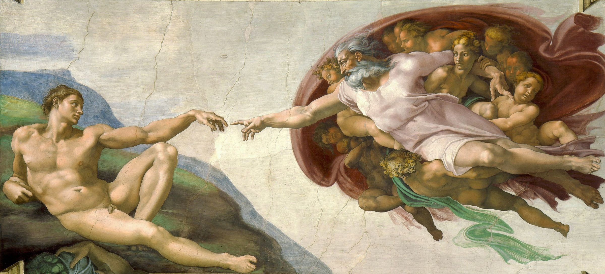
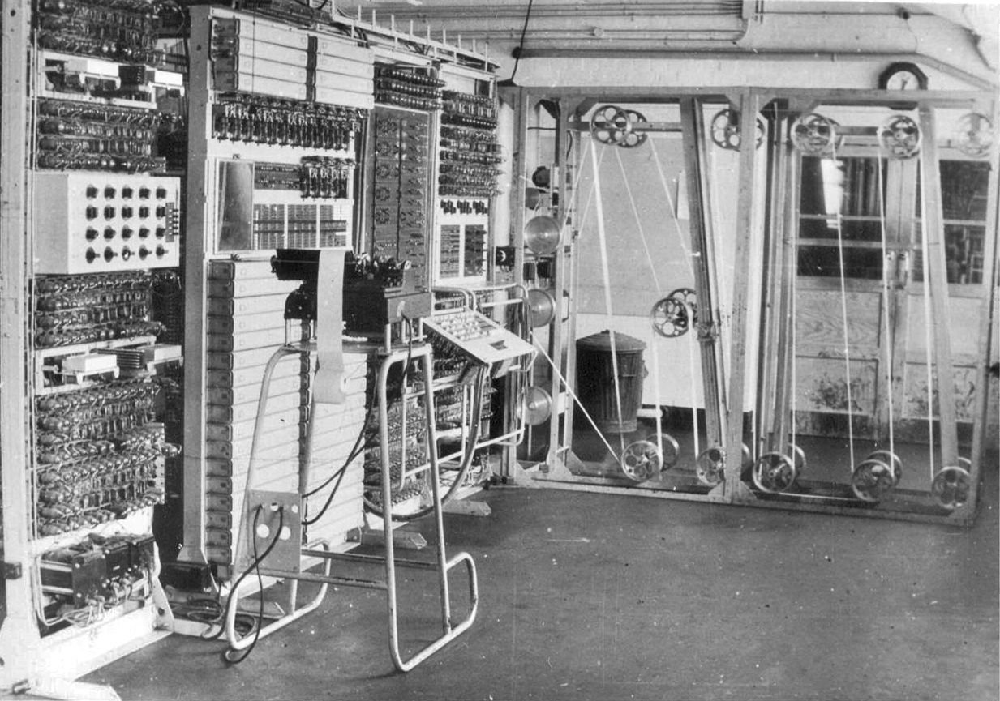
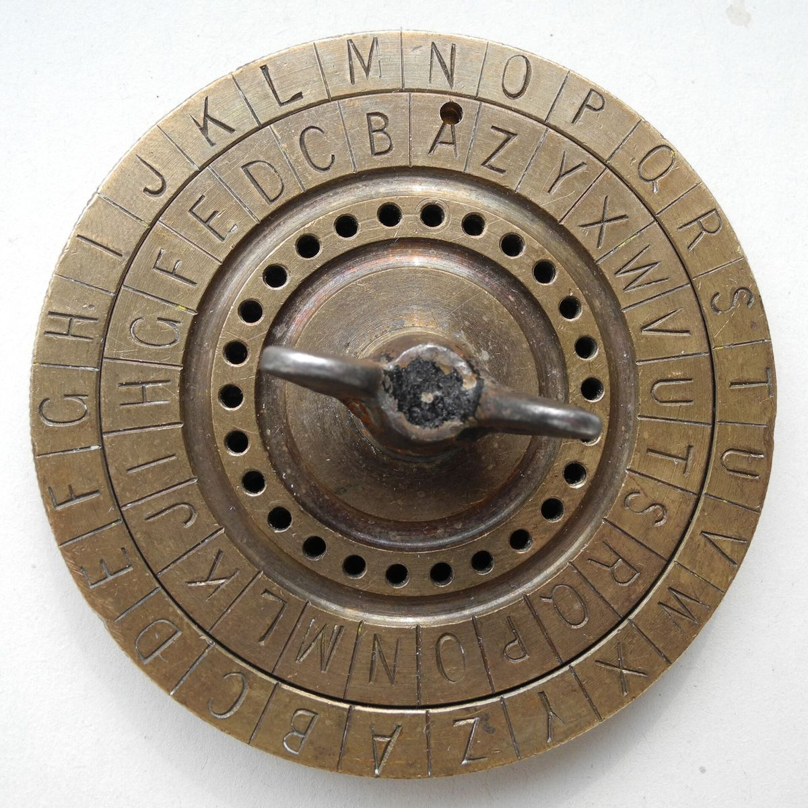
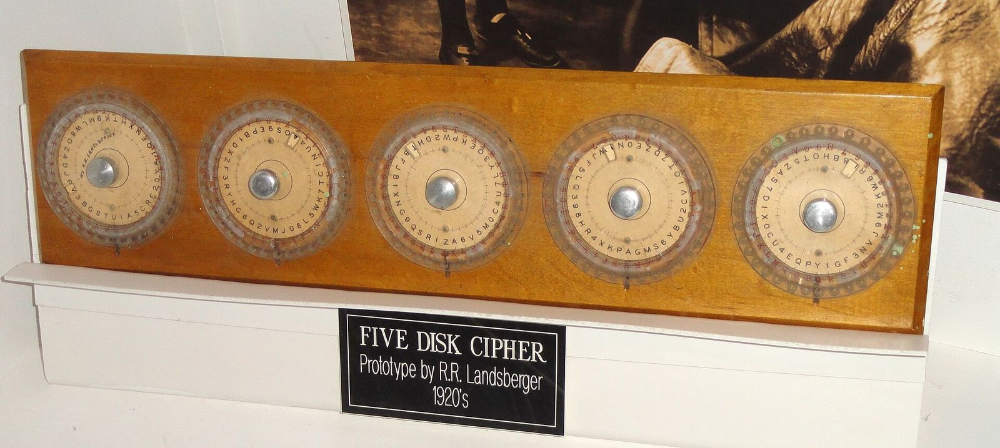
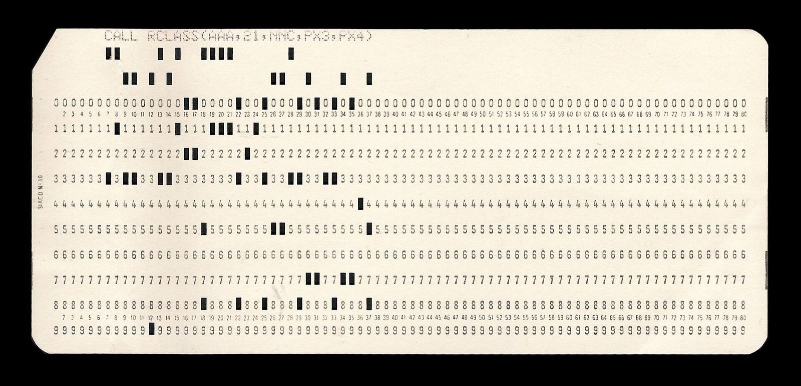
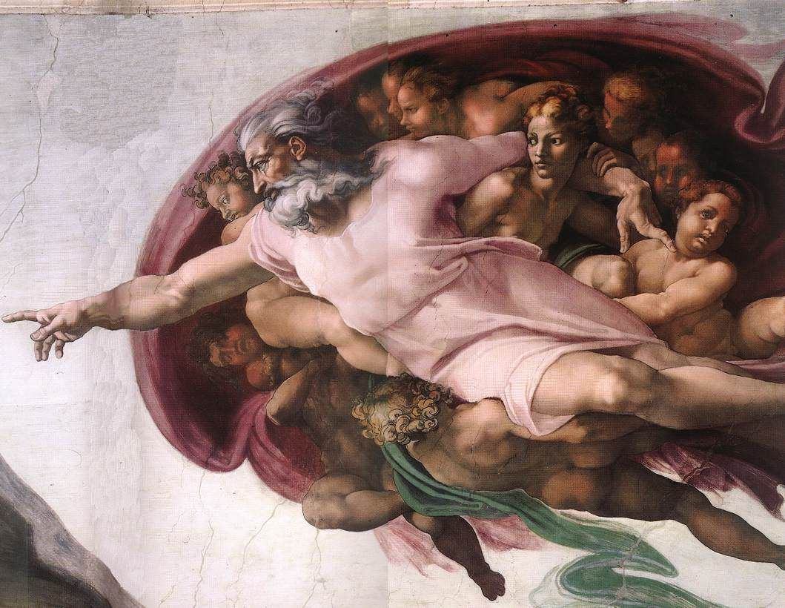

Two hands that never touch.
On the Sistine Chapel ceiling, two fingers reach across a gap a few centimetres wide. In security, that gap has a name.

The air gap.
Michelangelo painted the Creation of Adam between 1508 and 1512. Its most famous detail is the space between two fingertips that do not meet.
An air gap is the same idea in our field: the space between a system that matters and every network that could reach it. Attackers spend careers trying to cross it. We took it as our mark because the space you guard is the space you have to understand.
What we hold to.
- Only with permission
- We test what we own, what we built for practice, or what we are invited to test in writing. Nothing else. Breaking this rule ends membership.
- Break it, then explain it
- A solve is not finished until it is written up so the next person can learn from it.
- Everyone starts at zero
- No question is too basic on a Friday. The people who answer them were asking the same ones last year.
- Report, do not exploit
- If you find a real bug in a real system, including the university's, you tell the owner quietly and you help them fix it.




M4 Enigma, captured with U-505 in 1944

Where we meet.
The USICT block, Guru Gobind Singh Indraprastha University, Sector 16C, Dwarka, New Delhi 110078.
Flag Night runs every Friday from 5:30 pm in the lab. Workshops are on Saturday mornings. Ask at the USICT reception for the cybersecurity club and someone will walk you up.
Questions, answered.
- Do I need to know how to hack?
- No. Most members started with nothing but curiosity. Flag Night pairs you with someone who has solved the challenge before.
- Is it only for computer science?
- No. ECE, IT, MCA and M.Tech students are all members. Forensics and cryptography reward people from every background.
- Does it cost anything?
- Nothing for USICT students. Some external CTFs charge a team fee; the club covers it when it can.
- Is any of this legal?
- Everything we do is. We practise on systems built for practice and follow the rules above without exception.
- Can I write challenges for AirGap CTF?
- Yes. Authors start in October; the CTF captain reviews and tests every challenge with you.